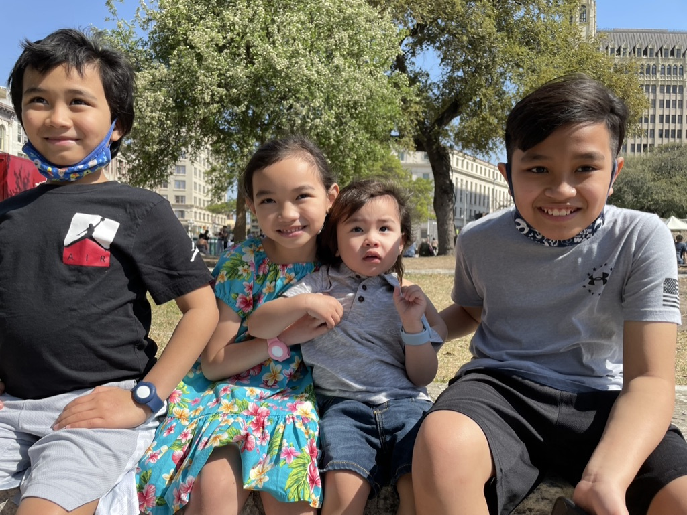
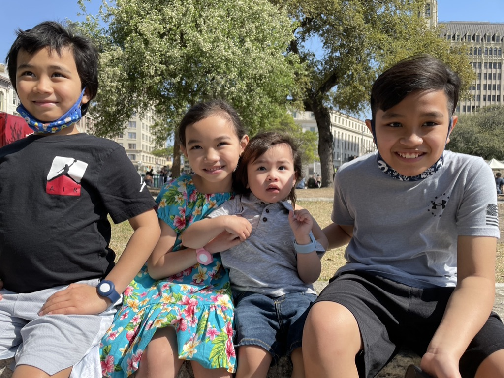

ABOUT
I fell in love with graphic design since I watched a documentary on how Hallmark made their greeting cards. The design process involved really captivated me. I told myself then, "I want to do that." Life took me on a different path but 23 years later I'm trying to live my first passion. I'm currently studying Web Design and Development at Brigham Young University Idaho. I learn and refine my skills by working on school projects and other personal projects.
I was born and raised in the Philippines but now lives in Utah with my husband and 4 little humans. I enjoy doing anything my children loves to do: playing Minecraft, going to parks, even singing Baby Shark for the hundredth time.
My Design Philosophy
I take the design process seriously. I love seeing one small idea turn into something amazing. Of course, there are many steps involved in growing a small seed of idea into something fruitful. There's research, ideation, sketching, collaboration, feedback, testing, and of course, more feedback.
 
